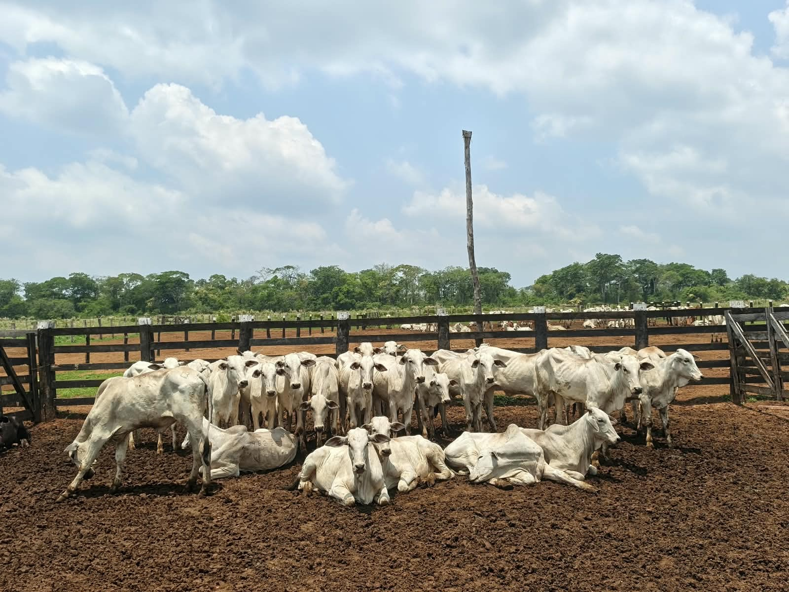
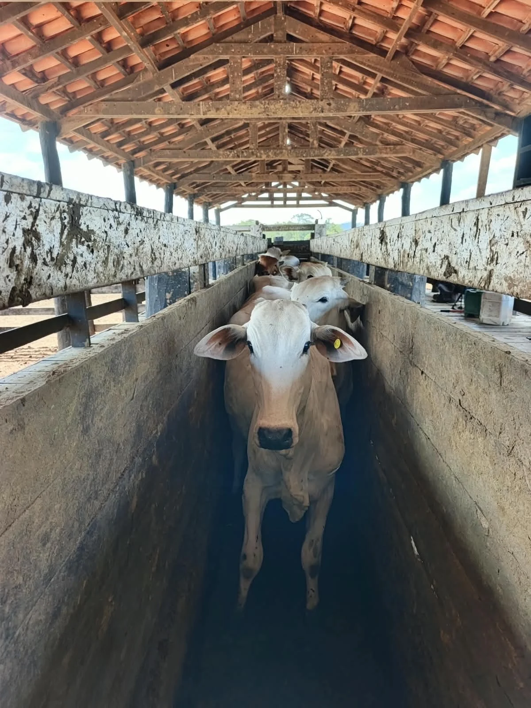

Hacienda El Mundo
Tradición familiar, genética y producción ganadera con visión de futuro.
Quiénes somos
Una hacienda familiar con visión productiva.
El Mundo es una hacienda ganadera dedicada a la producción de carne vacuna mediante la cría, recría y engorde de ganado.
Desde Santa Cruz, Bolivia, unimos el trabajo de la familia con una ganadería preparada para el futuro.
Nuestras razas
Ganado adaptado a nuestros objetivos.
El Nelore es nuestra raza principal por su rusticidad y adaptación al clima. También trabajamos con Angus, Brahman, Sindi y cruce industrial.
01 / 05
Nelore
Rusticidad y adaptación al clima tropical.
02 · Calidad cárnicaAngus
Precocidad, fertilidad y calidad de carne.
03 · AdaptabilidadBrahman
Resistencia, longevidad y tolerancia al calor.
04 · Estrategia productiva
Cruce industrial
Combinación genética para aprovechar el vigor híbrido.
05 · EficienciaSindi
Rusticidad, fertilidad y aprovechamiento eficiente.
Venta
Animales disponibles.
Consulta nuestras categorías de ganado y solicita fotos, videos e información directamente por WhatsApp.
Genética mejorada
Selección pensada para producir mejor.
Realizamos trabajos de inseminación con pajuelas de toros seleccionados para mejorar la genética del hato.
Buscamos animales con mayor precocidad, buen desarrollo y la capacidad de alcanzar el peso de faena en menos tiempo.
Conocer el proceso →Galería
Una mirada a Hacienda El Mundo.



Contacto
Hablemos de ganado.
Para consultar sobre animales, genética o disponibilidad, escríbenos directamente.